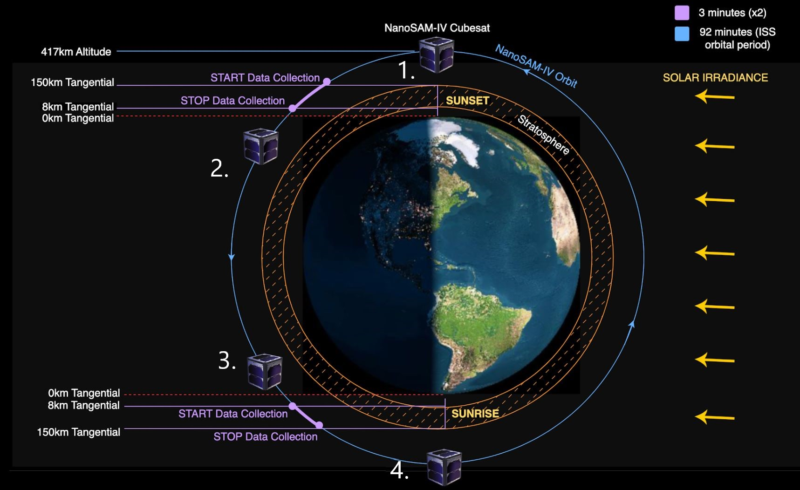

NANOSAMIV
NANOSAM is a Ball Aerospace sponsored project through CU Boulder that reduces he Ball Stratospheric Aerosol Measurement missions to a half-U CubeSat design. NANOSAMIV is the fourth iteration of the project that focusses on the embedded systems, integration, and data collection.
My role as the embedded software lead was to create and manage a detailed design of CubeSat embedded software and satellite bus integration software. I developed flight software for a Teensy 4.0 that served to fufill our customer requirements. There were four different modes of operation in which a laptop could control the microcontroller. The full software system can be seen below.
Our team strived for constant improvement which saught for a clear description of the mission and success itself. In our laboratory environment, we acheived data acquistion and processing of simulated solar irradiance in an automated fashion. We had deliverables such as an AIAA paper, a Symposium (Expo), and other formal reviews.
Weather Balloon
Satelite Payload
Freshman year, I was fortunate to work with an amazing team to design, manufacture, and test a CubeSat. We had to implement normal sensing such as temperature and altitude but had the opportunity to create our own scientific mission.

This mission was in association with the Gateway to Space course at the University of Colorado Boulder and the Colorado Space Grant Consortium (COSGC). We decided to to discover how effective, or ineffective, certain materials were in shielding spacecraft from ionizing gamma radiation to investigate innovative passive shielding methodologies.
I undertook the majority of the software role and, with some support from Thomas Saw's Arduino library, implemented four digital pocket geigers to collect data concurrently. Before launch, we worked with CU Boulder’s Office of Environmental Health and Safety Lab to test and calibrate with their Cesium-137 beam.

Launch and collection was successful, but we went offline when the balloon bursted. To the right you see our data compared to data from Spaceweather.com.
This project was the start of my interest in the intersection of Computer Science in Aerospace Engineering.